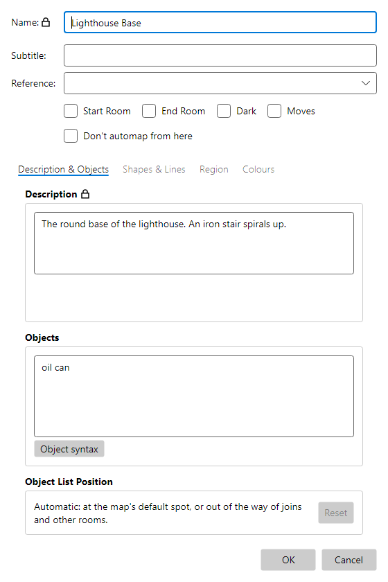
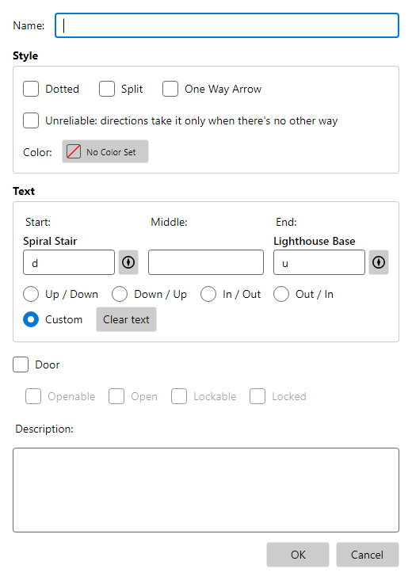
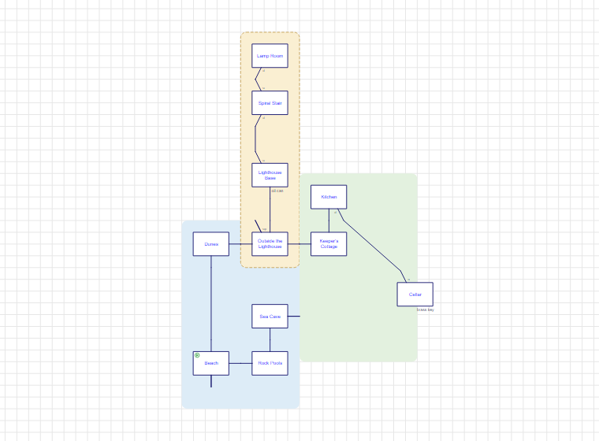
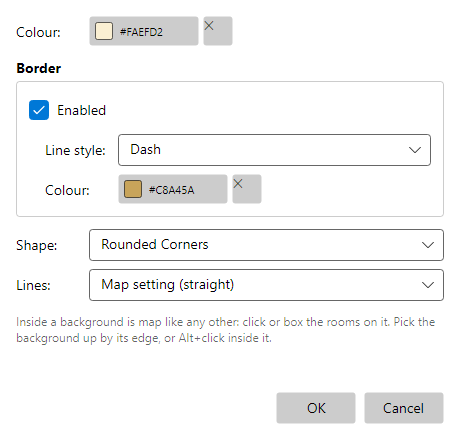
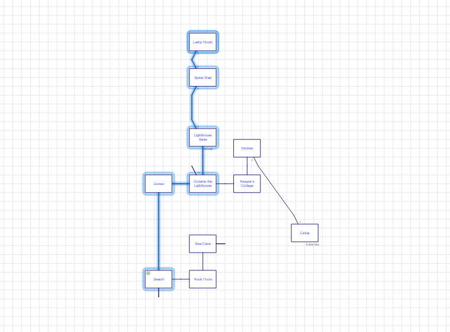

Drawing the map¶
Rooms¶
- Add a room: double-click an empty spot, press R, or right-click and choose Add Room.
- Rename it: press F2.
- Its properties: double-click it, or press Alt+Enter.

The Description & Objects tab holds the room's description and what's in it, one object a line. The other tabs set its shape, lines, region and colours. Start Room, End Room and Dark change how it's drawn (a dark room is shaded).
A padlock beside the name means automap drew this room and knows it again by its name and description. Click the padlock to unlock them if you need to change them.
Joins¶
A join is a way from one room to another. Drag from a room's port (the dots round its edge) to another room, or press J to join the selected rooms. Double-click a join to open its properties.

- Text labels each end ("u" and "d" here) and the middle. The buttons below fill in the usual pairs.
- One Way Arrow for a way you can't come back along.
- Dotted for a way you're not sure of, Split to draw a long join as a short stub at each end ("to Building").
- Unreliable for a way that doesn't always lead where it's drawn (the game picks at random). Directions only take it when there's no other way.
- Door for a door, which can be openable, lockable and so on. This is used when exporting to game source.
To bend a join, select it and drag the handle in its middle.
Regions¶
A region is a group of rooms drawn in their own colours: "Above ground", "The cellars". Select some rooms, right-click and choose Set Region, then a region, or Add New Region... to make one for them: name it and choose its colours, and press OK. Change Region (Shift+F2) does the same from the keyboard.
Rooms not in a region are in No Region. Change or delete regions in Map Settings > Regions.
Backgrounds¶
A background is a coloured shape behind part of the map: the shore, the lighthouse, the cottage. It sets them apart whatever regions the rooms are in.

- Add one: select the rooms it should go behind and press B (or right-click and choose Add Background). It's drawn round them, with a little to spare. With nothing selected, it goes where the mouse is.
- Inside a background is map like any other: click rooms on it, double-click to add one, or drag a box round them.
- Pick it up by its edge, or Alt+click inside it. Drag it to move it (the rooms stay where they are), or drag its handles to resize it. Delete removes it.
- Its properties (double-click its edge, or Alt+Enter): colour, border, shape, and hand-drawn or straight lines.

Selecting and tidying¶
- Drag a box round rooms to select them, or Ctrl+click to add one at a time. Ctrl+A selects everything.
- The number pad selects the room in that direction. Ctrl+arrow does too, or, if there's no room that way, adds one and joins it: a quick way to sketch a map from the keyboard.
- Tidy Map... (Edit > Rooms) lines the rooms up and untangles the joins: the whole map, or just the rooms you've selected. Rooms you've placed yourself stay where you put them.
- Merge Rooms turns two copies of a place into one. Split Room... turns one room into two.
Directions¶
Need to get from one room to another? Right-click where you want to go and choose Navigate to Here. The Directions panel lists the commands to type, and the route glows on the map.

- While automapping, the directions start from where you are, and follow you as you play.
- Otherwise, choose Navigate from Here... on the room to start from.
- Copy Commands copies them, one a line, to paste into the game.
- Right-click a step and choose Avoid This Route to go another way.
Next: Labels